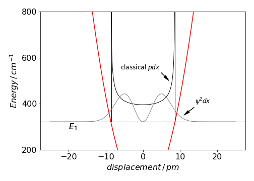
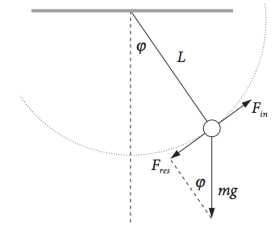
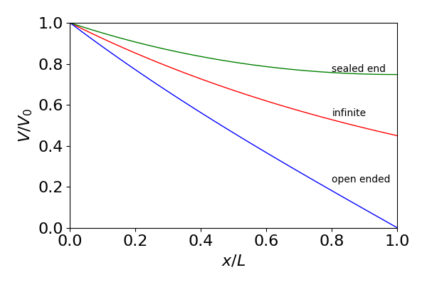
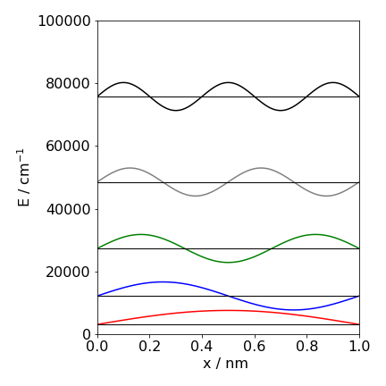

9 First order equations & Integrating factors. Second order equations, Newton’s laws and equations of motion.
Contents
9 First order equations & Integrating factors. Second order equations, Newton’s laws and equations of motion.#
# import all python add-ons etc that will be needed later on
%matplotlib inline
import numpy as np
import matplotlib.pyplot as plt
from sympy import *
init_printing() # allows printing of SymPy results in typeset maths format
plt.rcParams.update({'font.size': 14}) # set font size for plots
9.1 Homogeneous equations#
A homogeneous differential equation has the form
if \(M\) and \(N\) are functions of the same degree in \(x\) and \(y\). This constraint means that \(M/N\) is a function of \(y/x\) and the homogeneous equation has the form
where \(f\) is the function of \(y/x\). To solve this equation the substitution \(y = ux\) is used. The derivative is
then \(\displaystyle u + x\frac{du}{dx} = f(u)\) which can have its variables separated to produce
which is integrated to find the solution.
The equation
satisfies the condition \(Mdx + Ndy = 0\) because the degree of \(xy, \; x^2\) and \(y^2\) is the same, and is 2, on both on the top and bottom of \(\displaystyle \frac{2x^2 + 3y^2}{xy}\). The function \(f(u)\) then becomes
and then the solution is found using equation (11) as
and which is, with \(\ln(c)\) as the integration constant,
and after substituting and rearranging, the general solution is
Using SymPy produces the similar answer.
x, y = symbols('x, y')
y = Function('y')
f01 = diff(y(x),x)-(2*x**2 + 3*y(x)**2)/(x*y(x) ) # define equation , y is function of x
ans = dsolve(f01) # solve then factor answer
factor(ans)
9.2 Exact equations#
The exact equation also has the form \(Mdx + Ndy = 0\) with the additional constraint that
and this type of equation is frequently met in Thermodynamics, see Chapter 12.8.
If a differential equation \(\displaystyle Mdx + Ndy = 0\) , is multiplied throughout by a suitable term it can become exact; i.e. the equation is now
The term \(G(x, y)\) is called an integrating factor which in general can be difficult to uncover except in the case of linear first-order equations that are described next.
9.3 Linear first-order equations and Integrating Factors#
Linear first-order equations have the form,
where \(P\) and \(Q\) are functions of \(x\) only. These equations can be integrated using integrating factors. First we consider the particular case when \(Q = 0\) or
Writing the equation as \(\displaystyle \frac{1}{y}dy +Pdx=0\) and integrating gives
where the constant is \(\ln(c)\). Simplifying gives
If this equation is differentiated, it produces \(\displaystyle \frac{d}{dx}ye^{\int Pdx} = 0\). From this result, it can be shown that
and the right-hand side is the starting equation (12), multiplied by the integrating factor
It follows that the solution of the differential equation becomes the two integrals,
(i) Example#
The equation \(\displaystyle \frac{dy}{dx} + \frac{y}{x}= 3\sin(x)\) is solved.
In this equation \(P = 1/x\) and \(Q = 3\sin(x)\). The integrating factor is simple in this case and is
and as \(\displaystyle e^{\ln(x)}=x\) then \(yx = 3\int x\sin(x)dx +c \).
Integrating this by parts and rearranging, produces
and the constant is determined once the initial conditions are specified.
While this method is very useful, it does have its limitations particularly when \(Q \ne 0\); for instance the similar equation
has the integrating factor \(\displaystyle e^{\large{\int xdx}}=e^{x^2/2}\). The solution is,
and the remaining integral is now a difficult one with the answer involving the error function.
(ii) Coupled chemical kinetic equations#
One particularly useful application of this method is to solve coupled kinetic equations. If a molecule reacts in a scheme
the rate equations are easily written down,
If the initial amount of \(A= A_0\) and \(B_0 = 0\), then integrating the first equation gives \(\displaystyle A = A_0e^{-k_1t}\) . Substituting this into the second and rearranging gives
which has the form \(\displaystyle \frac{dB}{dt}+PB=Q\) and can be solved using the integrating factor \(\displaystyle e^{\large{\int Pdt}}=e^{k_2t}\) with the solution,
which is
The initial conditions are \(B = 0\) when \(t = 0\) then
and this has the expected form; it is zero when \(t = 0\) and again when \(t = \infty\) and passes through a maximum when \(dB/dt = 0\).
9.4 The Bernoulli Equation#
The equation \(\displaystyle \frac{dy}{dx} + Py = Qy^n \),
where \(P\) and \(Q\) are functions of \(x\) alone, is called the Bernoulli equation. If the integer \(n = 1\) the equation is solved by separating variables in the usual way. If \(n \ne 1\) the equation can be solved with an integrating factor with the substitution \(\displaystyle y^{1-n} = u \).
Differentiating gives
and the equation becomes
The complicated equation \(\displaystyle x\frac{dy}{dx}+y=x^2e^xy^2\) is seen to be of the Bernoulli form because if divided through by \(x\) it becomes
Comparing with the Bernoulli equation, \(n = 2\) and with the substitution \(u=1/y\) then
The integrating factor is \(\displaystyle e^{\large{\int Pdx}}=1/x\) then
Substituting back gives \(\displaystyle y=-\frac{1}{x(e^x+c)} \)
10 Second-order differential equations#
In the next few sections equations of the general mathematical form
are solved where the \(\pm f(y)\) is some function of \(y\). In simple harmonic motion, for example, \(f(y)= y\). The solution always involves exponentials or sines/cosines depending on the boundary conditions needed.
There are different ways of solving differential equations as illustrated in the next few sections, but a general method of solution is detailed in section 12 using the ‘D operator’ method and is briefly outlined here.
A second-order equation for illustration is,
The differential is replaced by the differential operator, \(\displaystyle D=\frac{dy}{dx},\;D^2=\frac{d^2y}{dx^2} \) and so the equation becomes,
Next we hypothesize that the equation is satisfied by exponential functions such as \(\displaystyle y = e^{kx}\) where \(k\) is a constant to be determined. The way to find \(k\) is to substitute the guessed answer into the equation \(\displaystyle (D^2 + a)e^{kx} = 0\) and evaluate, viz.,
Next evaluate \(k\) via the auxiliary equation which in this case is
which has roots of \(k_1 = +\sqrt{-a}=i\sqrt{a} \) and \(k_2 = -\sqrt{-a}=-i\sqrt{a}\). As there are two roots the solution is thus the sum of two exponentials
where \(A\) and \(B\) are arbitrary constants determined by the initial conditions. As the equation has effectively been integrated twice two lots of initial conditions are needed, for example at \(x = 0, y = y_0\) and also, say, \(dy/dx = 0\) (called a reflecting boundary condition) thus \(y_0 = A+B\) and \(0 = iA\sqrt{a}-iB\sqrt{a}\) or \(A=B\) forming
and as the exponentials are complex this solution can be converted into a cosine as
as a check differentiate twice, \(\displaystyle \frac{d^2y}{dx^2} = -y_0a\cos(\sqrt{a}x)=-ay\).
If the boundary conditions were \(x = 0, y = y_0\) and when \(x=L, y=0\) (an absorbing boundary condition) where \(L\) is some particular value, then \(y_0=A+B\) and \(\displaystyle 0=Ae^{i\sqrt{a}L}+Be^{-i\sqrt{a}L}\)from which \(A,B\) can be determined. The result can be expressed as a ratio of exponentials or cosines in \(x\) and \(x-L\).
10.1 Newton’s laws and differential equations describing motion#
Differential equations dominate the study of the motion of the planets and of molecules. In single molecules or in ensembles of them, molecular dynamics calculations rely on solving many simultaneous equations according to Newton’s laws of motion, linked to potentials describing intermolecular interactions.
Newton’s laws are
(i)\(\quad\) Every particle remains either in a state of rest or of constant speed in a straight line unless acted on by a force to change that state.
(ii)\(\quad\) The rate of change of the momentum of a particle is proportional to the force acting on it and is in the direction of the force.
(iii)\(\quad\) Action and reaction are equal and opposite.
The first law states that any acceleration experienced by a particle is caused by the action of an external force. The second law proposes that force \(f\) is equal to the product of mass and acceleration since momentum is the product of mass and velocity;
where \(x\) is position, \(v\) velocity, and \(t\) time. The second law includes the first, for if the force is zero then so is the acceleration and the body must remain unchanged.
The third law asserts that if two particles exert forces on one another, the force exerted by the first on the second is equal to that exerted by the second on the first. This law can be used to define the mass of a particle.
Newton’s law of gravity was formulated to understand the motion of the planets. It states that the force of attraction of two bodies is proportional to the product of their masses and the inverse square of their separation \(r\),
where \(G\) is the gravitational constant \(6.673\cdot 10^{-11}\,\mathrm{N\, m^2\,kg^{-2}}\). This law of attraction takes a simpler form in the case of a small body falling to earth from heights that are small compared to its radius. In this case, \(r\equiv R\), the radius of the earth, is sensibly constant and the law becomes
where the acceleration due to gravity is \(g=GM/R^2 = 9.81\,\mathrm{ m \,s^{-2}}\) where \(M\) is the mass of the (spherical) earth. Clearly, \(g\) will be different on the moon to that on the earth. The differential equation for a body falling from a height \(x\) under gravity, is therefore
and is independent of the mass. The distance \(x\) is positive in the downwards direction. Positive upwards would change \(g\) into \(-g\). If this equation is integrated once then
where the integration constant \(v_0\) is the initial velocity at \(t\) = 0, and \(v = dx/dt\) is the velocity at time \(t\) producing the familiar equation \(v = v_0 + gt\).
Integrating again produces the distance travelled after a time \(t\) from the starting or reference point \(x_0\),
This equation contains all the information about a freely falling body.
10.2 General Equation of Motion, Energy equation and Simple Harmonic Motion.#
If the force is represented by \(f(x)\) then different types of motion can be studied, for example motion under gravity or that due to extension of a spring which will lead to simple harmonic motion.
The simple harmonic motion is the most important form of periodic motion. It describes the small angular oscillations of a pendulum as well as a good approximation to the vibrations of molecules, and this is called the harmonic oscillator model. A spring that hangs vertically with a mass attached to its end, a taut wire with a mass attached at it centre, or the oscillations of a ship or of a hydrometer, all follow simple harmonic motion, if the inertia of the spring, wire, or liquid is ignored. In this motion, the acceleration is proportional to the displacement of the particle from its central position.
The general equation of motion is formed by equating force, as mass multiplied by acceleration, to the force \(f(x)\) on the particle, such as given by Hooke’s or some other law,
If the force is due to gravity, then \(f (x) = mg\); if describing simple harmonic motion based on a small extension of a spring obeying Hooke’s law, then \(f(x) = -kx\) where \(k\) is the force constant and in molecules this has values of a few hundred newton metres sec\(^{-1}\) .
This type of differential equation can be solved by multiplying both sides by \(dx/dt\) which produces
and, although this does not look too promising, the left-hand terms are the derivative of \(\displaystyle \left(\frac{1}{2}\frac{dx}{dt}\right)^2\), therefore integrating both sides gives
where \(c\) is the constant of integration. This is the ‘Equation of Energy’; the left-hand side is the kinetic energy since \(dx/dt\) is velocity and the right hand side is the potential energy.
The time to reach position \(x\) can also be found. First let \(\displaystyle \int f(x)dx+c =F(x)\), then rearrange the energy equation to
and integrate,
This equation contains two arbitrary constants, \(c_1\) and \(c\), of which \(c\) is already included in \(F(x)\). Two constants are needed because the acceleration has to be integrated twice.
The equation of energy can be obtained in a slightly different way if the velocity \(v\) is required. Taking \(x\) as the dependent variable and using
equation (13) can be written as
Integrating produces \(\displaystyle \frac{mv^2}{2}=\int f(x)dx+c\) which is the same as equation 14.
The calculation can be completed when different types of forces are assigned to \(f(x)\). Two examples are given, one for the motion of a rocket, another for simple harmonic motion.
10.3 Rockets#
At the end of section 3.5 the motion of a rocket launched vertically was examined. Figure 8b. shows plots of velocity and time vs distance away from the earth’s surface. To calculate the distance moved in a given time equation 15 can be used.
The equation to use is \(\displaystyle \frac{dv}{dt}\equiv v\frac{dv}{dr}=-\frac{gR^2}{r^2}\) which leads to \(\displaystyle F(r)= v_0^2 - 2gR+ \frac{2gR^2}{r}\).
The integration is
With \(r\) as the variable the equation can be clarified if written as \(\displaystyle \int \frac{ dr}{\sqrt{A+B/r}}\) where \(A=v_0^2-2gR\) and \(B=2gR^2\) are constants in the integration. The result is
and the constant \(c\) is evaluated as \(r=R\) at \(t = 0\). When the initial velocity is the escape velocity
then
Plots of \(t\) vs \(r\) are shown in fig 8b. Note that the inverse hyperbolic sine, \(\sinh^{-1}(x)\), can also be written as
10.4 Rockets and conservation of momentum#
The Law of Conservation of Momentum can be used to find the velocity of a rocket. Suppose that the rocket is moving at velocity \(v\) (relative to some fixed coordinate system) and ejects fuel with velocity \(-u\) relative to the rocket, therefore the mass of the rocket \(M\) decreases with time as the fuel is used. We know that the rate of change of momentum is equal to the external force on a system of particles (i.e force is mass times acceleration and acceleration is the rate of change of momentum)
where \(p\) is the total momentum of all particles in our case the rocket and ejected fuel. The external force \(F\) could be air resistance or gravity for example. The momentum of rocket and exhaust produces
The term on the left is the change in the rocket’s momentum and the second term that of the ejected fuel. The minus sign appears because the momentum of the ejected fuel is in the opposite direction to the rocket’s motion.
Evaluating the first differential and simplifying gives
The term \(udM/dt\) is called the thrust and is in the opposite direction to the exhaust velocity. If there is no external force the remaining equation describes conservation of momentum, viz,
Multiplying the last equation by \(dt/M\) and integrating by recalling that \(M\) is a function of time produces,
were \(v_0\) is the initial velocity, \(M_0\) the initial total mass which is that of rocket plus fuel, and \(M\) is the mass of the rocket and any remaining fuel when the velocity is \(v\).
The rockets’ speed only depends on the exhaust velocity and the fraction of the mass exhausted in that time interval needed to change the speed to \(v\) from \(v_0\). Notice also that the speed at any time does not depend on how quickly the fuel is used, this does not enter the calculation, but clearly the lower the rate of fuel consumption the longer it will take to reach a set velocity.
If \(m\) is the mass of the fuel and all is consumed then \(M\) is the mass of the fuel empty rocket, \(M_0=M+m\) and \(v\) the maximum velocity, \(\displaystyle v-v_0=u\ln\left(1+\frac{m}{M}\right)\). In a rocket it is therefore desirable to carry as much mass as fuel as possible so that \(1+m/M)\) is large. Additionally, if the propellant is a cold gas, from the Kinetic Theory of Gases the r.m.s. speed of a gas decreases with atomic mass, i.e. \(u\) is smaller for heavier than low atomic masses, so low atomic mass gases would seem to be preferred to make the final velocity as large as possible.
10.5 Hooke’s Law and simple harmonic motion#
In the case of a force in a line towards the origin that is a fixed point, simple harmonic motion ensues if the force is described by Hooke’s law \(f (x) = -kx\) where \(k\) is the force constant and \(x\) the displacement from the origin. The minus sign indicates that the force is towards the origin; when \(\displaystyle d^2x/dt^2\) is negative \(x\) is positive and vice versa. The equation of motion is now
The frequency of vibration, or oscillation, is defined as \(\displaystyle \nu =\frac{1}{2\pi}\sqrt{\frac{k}{m}}\, \mathrm{s^{-1}}\) or as \(\displaystyle \omega=\sqrt{\frac{k}{m}}\) and substituting this makes the equation of motion
which when integrated gives \(\displaystyle \left(\frac{dx}{dt}\right)^2=-\omega ^2x^2+c^2\) (see equation 14) and the constant is made \(c^2\) as this has to be positive because the velocity \(dx/dt\) must be a real not a complex number. Rearranging this equation to find the time gives
which is a standard integral giving \(\displaystyle t=\frac{1}{\omega}\sin^{-1}\left( \frac{\omega x}{c} \right) +c_1\). Thus
and the constants \(c,\;c_1\) are determined by the initial conditions and as they are constants this equation can just as correctly be written as
be defining \(A\) and \(B\) as constants also fixed by the initial conditions. \(B\) is called the phase angle of the sine wave and \(A\) is the amplitude. Some authors give a cosine solution but this differs only by the phase from the sine; \(\sin(x) = \cos(x \pm \pi/2)\). Furthermore, by the properties of sine and cosine functions, we can also write
where \(\alpha\) and \(\beta\) are new constants but still determined by the initial conditions. If the initial velocity is \(v_0\) and the position \(x_0\) at \(t\) = 0, then from (19) \(x_0 = \beta\) and
which produces \(\nu_0=\alpha\omega\), thus
and is dimensionally correct since \(v_0/\omega\) has dimensions of distance. This equation completely describes simple harmonic motion.
The average value of the displacement \(x\) over time of one or many whole vibrations should be zero. To prove this the equation needed is the displacement, such as eqn 18, and the time taken from zero to one period \(t_0=1/v\) where \(v\) is the frequency. Recall that \(\omega =2\pi v\) and \(B\) is a constant.
Evaluating the integral gives
because \(\cos(2\pi+B)=\cos(2\pi)\cos(B)-\sin(2\pi)\sin(B)=\cos(B)\).
The average of the square of the displacement is not zero and is
using \(\cos(2\theta)=1-2\sin^2(\theta)\) to simplify the integration. The integral using python/Sympy is
t, v, B, A = symbols('t, v, B, A', positive = True )
ans = integrate(A**2* v*( 1 - cos(4*pi*v*t+2*B ) )/2,(t,0,1/v) )
simplify(ans)
The square displacement gives the (time averaged) average potential (or displacement) energy as \(V=kA^2/4\) obtained by integrating the force from Hook’s law \(f(x)=-kx\). The (time averaged) average kinetic energy has the same value because the total energy is \(E=kA^2/2\) where \(A\) is the maximum displacement which is at the turning point.
The probability of being at position \(x\to x+dx\) can be found from the total energy by representing this as the sum of kinetic and potential parts. At extension \(x\) kinetic part is effectively \(mv^2/2\) for velocity \(v\) and the potential \(kx^2/2\). Thus
Separating out the derivative produces
and isolating \(dt\) gives
which means that the time spent within limits \(x\to x+dx\) depends on \(dx\) of the range considered. The probability of being at position \(x \to x+dx\) is this value as a fraction of the period \(1/v\) this
This means that as \(x\to \pm A\) the probability increases rapidly towards 1 but is small when \(x<A\). The oscillator is always confined within the potential. The probability has an approximately U shaped profile and contrasts sharply with that of the quantum harmonic oscillator.

Fig 11a Classical and quantised probability in a harmonic potential.
The figure shows the classical probability together with a harmonic potential such as for a diatomic molecule. The potential has a force constant of \(172\) N/m and the first quantised energy level is shown at energy \(E_1\). The square of the wavefunction is also shown. The classical probability extends only as far as the turning points at energy \(E_1\). The difference between the probabilities is quite considerable not in their overall size but in their shape. The classical probability cannot extend past the turning point, but the quantised probability does so quite considerably. At large quantum numbers, e.g. \(20\) the wavefunction has more probability close to the turning points, than in the middle of the potential and so resembles the classical behaviour a little more closely.
10.6 Springs#
Problems with springs often state that the spring has a weight attached, which causes the spring to extend by a certain amount. It is then extended or compressed by a further amount and let go. The equation of motion is then sought.
As a specific example, suppose that a helical spring has a mass of \(2\) kg attached to it and this extends it by \(5\) cm. It is then displaced by \(3\) cm from its new equilibrium position and let go. At equilibrium, before the mass is moved, the tension in the spring due to Hooke’s law is balanced by the force of gravity; \(mg = ks\) where \(s\) is the displacement from equilibrium before the mass is moved. If the spring is now extended by \(x\) the tension \(T\) increases to \(k(s + x)\). As the spring has no forces acting on it other than gravity, the force equation is
The tension is \(T = k(x + s)\) and as \(mg = ks\) then \(\displaystyle m\frac{d^2x}{dt^2} = -kx\), which is the same as equation (17) and has the solution (20) when the frequency squared is substituted for \(k/m\). To evaluate this equation, the oscillation frequency must be found, as must \(x_0\) and \(v_0\), which are set by the initial conditions. As \(v_0 = 0\), when the mass is let go (it is not pushed), then the solution is immediately given by
If the initial displacement is above the equilibrium position \(x_0 = -3\), therefore \(x = -3\cos(\omega t)\). Finally, the frequency is found from Hooke’s law. At equilibrium, \(mg = ks\) and \(s = 5\) is the displacement from equilibrium before the mass is moved. Therefore, the force constant \(k = 2 \cdot 9.81/5\,\mathrm{ N \,m^{-1 }}\) and the frequency squared is \(\omega^2 = k/m\) or \(\omega = 1.4\,\mathrm{ rad\, s^{-1}}\). This corresponds to a natural frequency of \(\nu = \omega /2\pi\) or \(0.223\,\mathrm{ s^{-1}}\) and period \(T = 1/\nu = 4.49\) seconds. The position of the mass at any time \(t\) is found to be \(x = -3 \cos(1.4t)\). Note that if the question stated that the weight was 2 kg then this would correspond to \(mg\) not \(m\) and the mass to use would therefore be \(2/9.81\) kg.
10.7 Total energy#
The total energy is the sum of the kinetic and potential energy and is a constant if no external force acts on the system. The kinetic energy is that due to motion \(mv^2/2\), and the potential energy can take several forms depending on how the motion is achieved. On extending a spring, the potential energy is force multiplied by distance displaced and the force is given by Hooke’s law. If the potential energy is that due to displacing a mass in a gravitational field, as occurs with a pendulum, then the potential is \(mgh\) where \(h\) is the height change.
If the displacement at time \(t\) is \(x = A \sin(\omega t + B)\), then the kinetic energy is
The potential energy determined by Hooke’s law force is linearly proportional to extension and is
As \(\displaystyle \omega^2 = k/m\) the total energy, the sum of the potential and kinetic terms, is \(\displaystyle E=\frac{k}{2}A^2\) which is a constant.
10.8 Simple harmonic motion with a constant force#
If a particle is attracted to the origin of set of coordinates, and subject to a further constant force \(W\), the equation of motion takes the form based on equation (13),
If a spring is displaced, then the force is \(f(x) = -kx\) at extension \(x\), and the equation of motion is
If this is re-written as \(\displaystyle \frac{d^2x}{dt^2} = -\omega^2x+\frac{W}{m}\) and then as,
then it has the form of (13) with a displacement about a new equilibrium position \(W/(m\omega ^2)\) rather than zero. This is understandable since a constant force is applied to the mass which must displace it by a constant average amount even though it is oscillating. The position at time \(t\) is therefore obtained directly from equation (20) as
if \(x_0\) and \(\nu_0\) are the initial position and velocity. The frequency \(\omega\) is the same whether the constant force is present or not.
11 The simple pendulum#
The pendulum will consist of a light rigid rod with a mass \(m\) at its end; the pivot holding the pendulum is frictionless and no air or other resistance hinders the motion. The variable \(\varphi\) is the angle in radians away from the vertical; Fig. 11. It is found that the pendulum’s angular frequency is
if \(g\) is the acceleration due to gravity and \(L\) the pendulum’s length. The mass of the pendulum \(m\) is used to calculate forces but cancels out in the result. The equation of motion can be derived in a number of different ways; here we make the inertial force of the moving pendulum equal to the applied force due to gravity, \(F_{in} = F_{res}\).
The inertial force \(F_{in}\) is found quite easily in terms of the angle \(\varphi\) as follows. The pendulum travels a distance \((2\pi L)(\varphi/2\pi ) = L\varphi\) around the circumference to reach an angle \(\varphi\); its acceleration is therefore \(\displaystyle L\frac{d^2\varphi}{dt^2} \) and the inertial force \(F_{in}\), is \(m\) times this since force is mass \(\times\) acceleration.
The restoring force \(F_{res}\), is the projection of the gravitational force, acting vertically down on the line of travel of the pendulum and is \(-mg \sin(\varphi )\). The normal component of the force acts along the pendulum’s arm.

Fig. 11b The geometry used to calculate the forces acting on the pendulum.
Equating forces produces, \(\displaystyle mL\frac{d^2\varphi }{dt^2}=-mg\sin(\varphi)\) which, by cancelling the mass and substituting for \(\omega\), produces the equation of motion
It is worth noting in passing that mass, inertial and gravitational, cancels in this equation so that the period depends only on the length of the pendulum and the force of gravity. There appears to be no reason why the inertial mass has to be the same as gravitational mass, but it is. Galileo, it is thought, first realized this by dropping different masses of the same size from the leaning tower of Pisa and observing that they struck the ground at the same time. Einstein did not ignore the equality of the inertial and gravitational mass, but developed this into a theory of gravity known as the General Theory of Relativity.
When the angular displacement is small, \(\sin(\varphi) \to \varphi\), which means that \(\varphi \lt 0.15\) rad or \(\approx 8^{\mathrm{o}}\), the pendulum’s motion becomes a simple harmonic oscillator of frequency \(\omega\). The equation of motion is
which has the general solution
as calculated in equation (20) but with \(\varphi\) (in radians) instead of \(x\) as displacement. The initial angle is \(\varphi_0\) from the vertical and initial velocity \(\nu_0\) rad s\(^{-1}\).
If the angular displacement is not small then the problem becomes rather more difficult, and after some effort (Arkfen 1970) an elliptical integral is produced with which the period can be calculated but which has to be evaluated numerically. The numerical integration of the pendulum’s equation of motion for any displacement is somewhat easier and is examined in Chapter 11.6.3.
11.1 The compound pendulum and torsional oscillations#
The compound pendulum is a rigid body freely suspended from a point that is not its centre of gravity and allowed to oscillate. The equation of motion is
where \(I\) is the moment of inertia of the body about the axis of suspension, \(m\) its mass, and \(h\) the distance from the centre of gravity to the point of suspension. This is the same equation as for a simple pendulum of length \(L \equiv I/(mh)\).
If a disc is suspended by a wire attached to its centre and twisted in the horizontal plane, torsional oscillations occur. The elasticity of the wire produces resistance to twisting and provides the restoring force. An angular displacement of \(\theta\) radians produces a force of \(k\theta /L\) if the wire is of length \(L\). The constant \(k\) is the torsional modulus of the wire. This can be related to the rigidity of the material comprising the wire and its geometry. The equation of motion is
where \(I\) is the moment of inertia of the mass about its point of suspension. Henry Cavendish (Philosophical Transactions, 1798, v 17 p 469, Royal Society London) used a torsional pendulum in his famous experiment to measure the gravitational constant.
11.2 Inverted pendulum: unstable equilibrium#
In the normal pendulum, acceleration is towards the vertical or origin of the motion. In the inverted pendulum with a rigid rod instead of a wire, acceleration is away from the vertical and the motion is unstable. The equation of motion for small displacements from the vertical, is similar to that of the pendulum but with a positive sign on the right-hand side of the equation,
and \(n\) is a constant. The horizontal component of the thrust outwards is \(mgx/L\), provided \(\varphi\) is small; the constant is therefore \(n^2 = g/L\). The solution for angular position is
where \(A\) and \(B\) are constants determined by the initial conditions. The general method of solution is given in Section 12, (‘D’ operator method). If the initial position is \(x_0\) and velocity \(\nu_0\), then \(\varphi_0 = A + B\) and \(\nu_0 = n(A - B)\). Changing the exponentials into hyperbolic sinh and cosh and substituting for the constants gives
which may be compared with equation 21.
11.3 Torsional Oscillations in ethene#
The ethylene molecule can undergo torsional motion whereby the double bond twists and so each CH\(_2\) group oscillates with respect to the other. Naturally, single bonds also do this but to a much greater extent such that complete rotation of a group is possible. We shall examine just the small angle torsional oscillations of a double bond and calculate the motion using classical equations of motion. This section follows the method used in chapter V of Cohen-Tannoudji, Diu, & Laloë, ‘Quantum mechanics’.
The potential for the motion of the CH\(_2\) is provided by the double bond and by comparison with other molecules, such as the inversion of ammonia we shall suppose that the potential has the form
where \(\alpha=\alpha_1-\alpha_2\) and \(\alpha_1,\alpha_2\) are the angles each CH\(_2\) relative to a fixed plane as shown in the figure. \(V_0\) is the maximum potential energy at \(\alpha =90^\text{o}\).
Fig 11c. Definition of angles used to define the CH\(_2\) -CH\(_2\) torsional motion in ethene. The horizontal line is a fixed reference plane. The whole molecule rotates about an axis going into the page. The angle \(\alpha=\alpha_1-\alpha_2\), the extent of the torsional motion is \(-\alpha/2\to \alpha/2\).
The twisting motion is about the C=C bond where \(I\) is the moment of inertia of a CH\(_2\) group. The force on one CH\(_2\) is found from Newton’s law and equating this to the derivative of the potential gives for each CH\(_2\) group
The derivative wrt \(\alpha_2\) is the negative of that for \(\alpha_1\) by function-of-a-function when when the potential depends on \((\alpha_1-\alpha_2\)). To see that this is the case the particular derivatives wrt \(\alpha_{1,2}\) are
making the equations of motion
adding produces
and subtracting
where \(\alpha=\alpha_1-\alpha_2\).
The first equation 23a, shows that the molecule rotates freely about the C-C axis as a whole body because there is no force restricting it. The angle \(\alpha_1+\alpha_2\) increases continually as time increases as may be seen by integrating 23a twice, producing \(\alpha_1+\alpha_2=c_0t+c_1\) where the \(c\)’s are constants. The second equation has the same form as that for a simple pendulum, eqn 17. Notice that there is no coupling between the whole body rotation and the torsional motion, therefore one motion does not affect the other. If there were coupling eqn 23a would equal zero.
In ethene the maximum potential restricting twisting the double bond is very large compared to room temperature thermal energy and this will mean that motion is restricted to the bottom of the potential. In this case the cosine can be expanded as \(\cos(2\alpha)=1-2x^2+\cdots\) and the potential becomes \(V(\alpha)\sim V_0\alpha^2\) and
where the torsion frequency is \(\displaystyle \omega=2\sqrt{\frac{V_0}{I}}\) by comparison with eqn. 17. A solution is \(\alpha=A\sin(\omega t+B)\) where \(A,B\) are constants determined by initial conditions such as \(\alpha=0,t=0\) and \(d\alpha/dt=\omega_0, t=0\), where \(\omega_0\) is the initial torsion frequency.
11.4 The Cable equation. Voltage change in a Cell#
The biological cell consists of a bilayer membrane, made mainly of phospholipids, encapsulating the cytoplasm. The membrane also contains various proteins that connect the inner cytoplasm to the outside of the cell. The cytoplasm is a gel-like substance that is highly conductive, unlike the membrane itself, because it contains various ions, as well as organelles, such as the mitochondria. Some cells, such as in muscles and nerves, can be stimulated to act by an electrical potential. When this potential travels along a cell it acts to trigger cellular events.
The Cable model of the cell has been borrowed and simplified from a similar one of a telegraph cable first worked out by Kelvin in the 1850’s. In this model the central core (the cytoplasm) has high conductivity and so low electrical resistance and the membrane low conductivity and high resistance, thus current can flow along the cell quickly with but only slowly is this lost via ions passing through ion-channel proteins in the membrane itself. The analogy with a telegraph wire is clear, the wire itself has low resistance to current flow but some small leakage to ground must also occur through any partial insulation, such as at the receivers or telegraph pole connections or through the air. Sometimes the comparison with a leaky hosepipe is also made.
The resistance can be used to compare the current flow in the cytoplasm and in the membrane. In the cytoplasm the resistivity \(r_c\) is defined as resistance per unit length of cable and so has units \(\Omega\)/cm, and the resistivity of current flowing through the membrane \(r_m\) is the resistance of a unit length of the membrane in \(\Omega\) m. This means that the resistance is reduced as a membrane’s length increases because we divide by length to obtain the resistance. The physical reason is that there are more pores to allow current to flow through the longer the membrane is. Conversely, the cytoplasm resistance increases with length, as expected as current flows through more substance. The resistivity has units of \(\Omega\)/m so this is multiplied by length to obtain the resistance. The membrane also has capacitance \(C_m\), (unit F/m=(C/V)/m) and the capacitance increases with length as there will be more ions with opposite charge on either side of the membrane as the length increases.
Fig 11d. Schematic of the cable/cell
To calculate the potential vs time and distance, the current flowing through the cell membrane is first calculated. This has two parts, current due to the capacitance of the membrane and that due to its resistance. The membrane has capacitance as it has a different overall charge on the inner and outer surfaces with a dielectric in between, i.e. the long alkyl chains of the lipid. The nature of capacitance is such that it does not pass a current when the potential is constant but only when this changes. The current due to resistance is determined by Ohm’s Law. These two terms for the current at a position \(x\to x+dx\) are
Now it remains to find \(i_m(x)\), which has units amp/metre. As current is not created of destroyed, that at a position \(x\) flowing through the membrane must be equal to the difference in that in the cell cytoplasm entering at \(x\) and that leaving at \(x+\delta x\) where \(\delta x\) is small. The current through the membrane over length \(\delta x\) is therefore
Ohm’s law (\(V=iR\)) relates the current and voltage, thus the current at position \(x\) in the cytoplasm is
see figure 11d, and
subtracting these produces
This expression is the second derivative, and this most easily shown by expanding \(V(x\pm \delta x)\) as Taylor series (see Chapter 5). Using \(V',V''\) to indicate the first and second derivatives respectively the expansions are,
and adding gives
and higher derivatives are ignored because \(\delta x \) is very small and \(\delta x^4\) even smaller. In the limit that \(\delta x\to 0\) the derivative is formed,
and partial derivatives are used because \(V\) is a function of both \(x\) and \(t\).
Equating both equations for \(i_m\) produces the Cable equation after a little rearranging
This equation can be simplified for the purposes of analysis, with the substitutions \(\displaystyle \gamma = t/\tau\). where the decay lifetime is defined as \(\tau= r_mC\) seconds and distances in \(u=x/\lambda\), where \(\lambda = \sqrt{r_m/r_c}\) metres, hence \(\lambda\) is a measure of how far the potential spreads, and is called a length constant.
The steady state is described next but the time dependence is found in section 15.8 after full solutions to the equation and other similar ones are worked out. At steady state after all transients have died away \(\partial V/\partial \gamma=0\) and so
To solve this equation for \(V\) integration must occur twice, two constants are thus needed. The boundary conditions are used to find these and they are applied after the general solution is found. Using the ‘D’ operator method outlined at the start of section 10 and in more detail in section 12, gives
and if a solution is \(V=e^{ku}\) the auxiliary equation is formed from \((D^2-1)e^{ku}=0\) which gives values for \(k\) by solving
thus \(k=\pm 1\) and the general solution is
which is
where \(A,B\) are constants determined by using the boundary conditions.
Infinite length cable#
If the cell (cable) is of infinite length then the potential will be zero at its end, so one condition is \(x=\infty, V=0\) and the other is an initial voltage \(V_0\) imposed by an electrode placed at \(u=0\) .
At \(x=0,\;V=V_0\) then \(V_0 = A + B\) and when \(x=\infty,\; V = 0\) giving \(0=B\cdot \infty\) therefore \(B=0\) and the solution is
which clearly shows how the potential decays away from one end with \(\lambda\) as its characteristic parameter, just as the lifetime does in the first order decay of a species.
Finite length#
In a finite length cable of length \(L\) but open at its end, the boundary conditions are changed to \(V=0, x=L\), called an absorbing boundary condition and an electrode again causes a potential \(V_0\) at \(x=0\).
Returning to the general solution gives
from which \(A,B\) are calculated as \(B=V_0/(1-e^{2L/\lambda}),\; A=-V_0e^{2L/\lambda}/(1-e^{2L/\lambda})\) giving
This result can also be expressed as a ratio of sinh functions as \(\displaystyle V=V_0\frac{\sinh((L-u)/\lambda)}{\sinh(L/\lambda)}\),
At \(x=0\), \(V=V_0\) as it should, and at large \(x\to L\) the potential tends to zero, because \(\left( e^{L-x} - e^{-(L-x) } \right)\to 0\).
Sealed Cable#
If the cable is sealed at its end and has length \(L\), then one initial condition must be that the gradient of the potential is zero at \(x=L\), and again \(x=0,V=V_0\) is imposed by an electrode. The derivative being zero produces \(dV/dx=0=-Ae^{-x/\lambda}+Be^{x/\lambda}\) and so \(Ae^{-x/\lambda}=Be^{x/\lambda}\). Working this through produces almost the same result as for the finite cable but with two sign changes.
This result can also be expressed as a ratio of cosh functions \(V=V_0\cosh((L-u)/\lambda)/\cosh(L/\lambda)\).
At \(x=0\), \(V=V_0\) as it should, and at large \(L\) and when \(x\to L\) and \(e^L/\lambda \gg e^{-L/\lambda}\) the potential tends to \(2e^{-L/\lambda}\) which clearly becomes smaller and tends to zero as \(L\) increases.
The shape of the solutions for the last two situations are not clear to visualise except that we know that they start at \(V_0\) and tend to a smaller value at larger \(u\), but they are easily plotted. The result is shown in figure 11d. As expected, because of \(e^L/\lambda\) in the denominator the potential becomes very similar and small as \(L\) is increased.

Figure 11e. Steady state voltage along a cable/cell with different boundary conditions.
11.5 Particle in a one-dimensional box#
Two quantum mechanical problems that can easily be solved using the methods just described are a particle (electron, proton, C60) in a one-dimensional box and a particle on a ring. Both involve integrating the Schroedinger equation, as must always be the case in quantum mechanics, but because the potential energy is zero the equations are considerably simpler than, say, that for the hydrogen atom or the harmonic oscillator. The one-dimensional Schroedinger equation in its general form is
where \(V(x)\) is the potential energy, \(m\) the mass of the particle and \(E\) the total energy. The length of the box is \(L\). In the box, \(V(x) = 0\) and additionally the boundary conditions are that the wavefunction \(\psi\), which is a function of position \(x\), is zero, i.e. always has a node at the ends of the box; the sides of the box are vertical and assumed to be infinitely high so the particle cannot tunnel into the walls. The equation to solve is
and the solution can be written down directly from equation (19) and is
where \(\alpha\) and \(\beta\) are constants.
The boundary conditions are that \(\psi = 0\) at both \(x\) = 0 and at \(x = L\), but these are not sufficient to enable both arbitrary constants in the problem to be calculated. To obtain both, the wavefunction has also to be normalized. First we simplify the general solution then normalise the wavefunction. When \(x\) = 0 then we must make \(\beta = 0\) and therefore \(\psi = \alpha \sin(\omega x)\) because the cosine would not have a node at the wall so is physically unacceptable. When \(x = L\), then \(\alpha \sin(\omega L) = 0\) and as \(\alpha\) cannot be zero as well as \(\beta = 0\) (the wavefunctions would then always be zero), then it follows that \(\omega L = n\pi \) where \(n\) is an integer. The wavefunctions are therefore
When \(n = 0\) then \(\psi = 0\), which is not a physically acceptable solution. Positive and negative integers \(n\) each produce acceptable solutions, but they are not independent of one another; therefore \(n = 1, 2, 3, \cdots\) are used to give unique solutions. As the sine function is periodic, increasing \(n\) means that waves with smaller periods can fit into the same box; the \(n^{th}\) wavefunction has \(n - 1\) nodes between the walls, the lowest wavefunction having no nodes is just half a sine wave.
The constant \(\alpha\) can be obtained by using the normalization condition \(\displaystyle N^2\int_0^L \psi_n^*\psi_n dx = 1\) and then \(N = 2/L\) . The normalized wavefunctions are
The energy of the \(n^{th}\) energy level is found by putting \(\psi_n\) back into the Schroedinger eqn. and is
which has units of joules. This equation means that there are \(n\) energy levels, one for each wavefunction, and so \(E\) is labelled with this quantum number as \(E_n\). Notice that the energy is never zero because there is a zero-point energy in accord with the Heisenberg uncertainty principle. The box is of finite length and the particle is thus in a restricted region of space. However, we cannot determine exactly where it is in this region and at the same time know its momentum; the condition is \(\Delta x\Delta p \ge \hbar/2\) where \(\Delta x\) is the uncertainty in position and \(\Delta p\) that in momentum. The uncertainty in position is given by its standard deviation
and that in momentum
The value \(\langle x\rangle\) is the expectation (or average value) of the operator \(x\), and \(\langle x^2\rangle\) that for the operator \(x^2\). The operator for momentum is \(\displaystyle -i\hbar \frac{d}{dx}\).
In general the expectation value of an operator \(Q\) is calculated as (see chapter 4.8).
Evaluating the integrals produces \(\displaystyle \Delta x\Delta p =\frac{n\pi}{\sqrt{3}}\frac{\hbar}{2}\) which is clearly greater than \(\hbar/2\) as \(n>0\).

Figure 11f. Energy levels and wavefunctions for a particle in a box. The mass used was that for an electron and the box is \(1\) nm in length. Notice how the energy levels move apart as \(n\) increases and how the number of nodes in the wavefunction also increases. A one dimensional box very approximately simulates a linear polyene, such as octatetraene.
11.6 The Rigid Rotor and a Particle on a Ring#
If the distance between two atoms is fixed, or if a particle is constrained to move on a circle, then the Schroedinger equation takes a simple form and the equation is essentially the same as for a harmonic oscillator. To describe motion in more than one dimension, the Schroedinger equation has coordinates in \(x\) and \(y\) if two dimensional, or \(x\), \(y\), and \(z\) if the motion is three dimensional. Ratner & Schatz (2001) give a clear description of this problem and others in quantum mechanics relevant to Chemistry.
The equation for two-dimensional motion is
which is a partial differential equation and is clearly rather complicated. First, to simplify the calculation, the rigid rotor or particle on a ring have zero potential energy so \(V= 0\). It only remains to simplify the derivatives and this is done with a change to plane polar coordinates using (see Chapter 1 section 7)
The differential operator
is also changed into \(r,\;\theta\) coordinates which gives
(see question 3.114). Substituting produces
The term in \(\theta\) describes the angular motion, and the other terms in \(r\), the radial motion. In a rigid rotor or a particle on a ring, the radial part is constant which means that this part of the kinetic energy can be omitted, and as the potential energy \(V\) is only a function of \(r\) it is also a constant and can be ignored. Only the angular parts remain.
There are two boundary conditions because the equation has second derivatives. Because the motion is circular, these conditions are (i) any wavefunction must have the same value after \(2\pi\) (360\(^\mathrm{o}\)) rotation, or multiples of this, and (ii) that it has the same slope at this point. This means that the wavefunction repeats itself without a discontinuity see Fig. 10.26. The equation is now simplified using \(\varphi\) to represent the angular part of the wavefunction and \(k^2=2mr^2/\hbar^2\) ,
The distance \(r\) is a constant, by definition for the rigid rotor, and \(mr^2\) is the moment of inertia \(I\) making \(k^2 = 2IE/\hbar^2\) and the energy is
The solution to the differential equation can be written down either as the sum of a sine and cosine or as exponentials. The latter is conventionally chosen making the solution
The boundary conditions are that the wavefunction must reproduce itself exactly after \(2\pi\) radians, or \(\varphi(\theta) = \varphi(2\pi + \theta)\). This condition means that
which will be true for any \(A\) and \(B\) if \(\displaystyle e^{ik\theta} = e^{−ik\theta} = 1\). This condition means that \(k\) must be an integer with values \(k = 0,\,\pm 1, \,\pm\) 2, \(\cdots\). Conventionally the solution \(\displaystyle \varphi =Ae^{ik\theta}\) is chosen and using the normalizing condition \(\displaystyle N^2\int_0^{2\pi}\varphi^*\varphi d\theta=1\), the wavefunction is;
The quantum numbers are \(k = 0, \pm 1, \pm 2, \cdots\) and as the lowest value is zero, this means that the minimum energy is zero and the rotor is stationary. As \(k \ne 0\) can be positive or negative it indicates that the rotor moves to the right or left and that these levels are each doubly degenerate.
As the lowest energy is zero it initially suggests that the Heisenberg uncertainty principle \(\Delta \theta \Delta p \ge \hbar/2\) is not obeyed. However, when \(J = 0\) the wavefunction is a constant, \(1/ (2\pi)\), so we cannot know what angle the rotor has and this means that \(\Delta \theta \Delta p \ne 0\).
11.6 Bernoulli Principle, fluid flow in a pipe#
The density of a flowing liquid is generally constant as the pressure changes and when this is so the liquid is considered to be incompressible. If a liquid flows towards a narrowing in a pipe, then the static pressure of the liquid is higher in the wider part of the pipe and the flow is slow, whereas in its narrow part the flow is increased and the static pressure reduced. This is called Bernoulli’s Principle.
Figure 11g. Sketch showing Bernoulli’s Principle.
Bernoulli’s equation can be derived using Newton’s \(2^{nd}\) law of motion. Suppose that the pipe is horizontal, so the effect of gravity can be ignored, and a small volume of liquid of length \(dx\) is flowing at speed \(v=dx/dt\). The pipe has a cross-sectional area \(A\) and the liquid has the same density \(\rho\) at all points and is \(\rho=m/Adx\) so that the mass of liquid in volume \(Adx\) is \(m=\rho Adx\). The pressure change over length \(dx\) is \(dp\). The force on the volume is therefore \(f=-Adp\) because pressure is force/area$. Using Newton’s second law; force equals mass times acceleration,
substituting for force and mass gives
To proceed further it is now necessary to deal with the derivative in time. This can be done as velocity is distance/time. Rewriting the acceleration gives
and by substituting produces
which rearranges to
and when integrated gives the Bernoulli equation,
where \(C\) is a constant that depends on the particular fluid used. We can see from this equation that Bernoulli’s principle is obeyed because when the pressure is high the speed must be low and vice versa because \(\displaystyle v^2/2+p/\rho\) is a constant.
If there is a difference in height \(z\) in the flow then
where \(g\) is the acceleration due to gravity and is the general form of the equation.